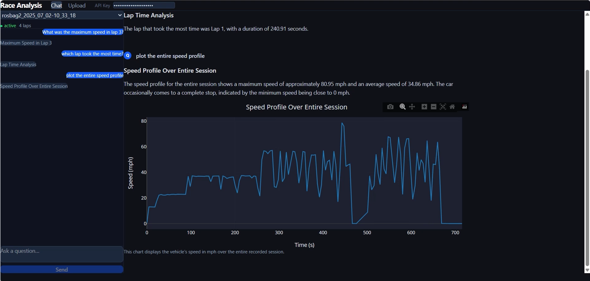
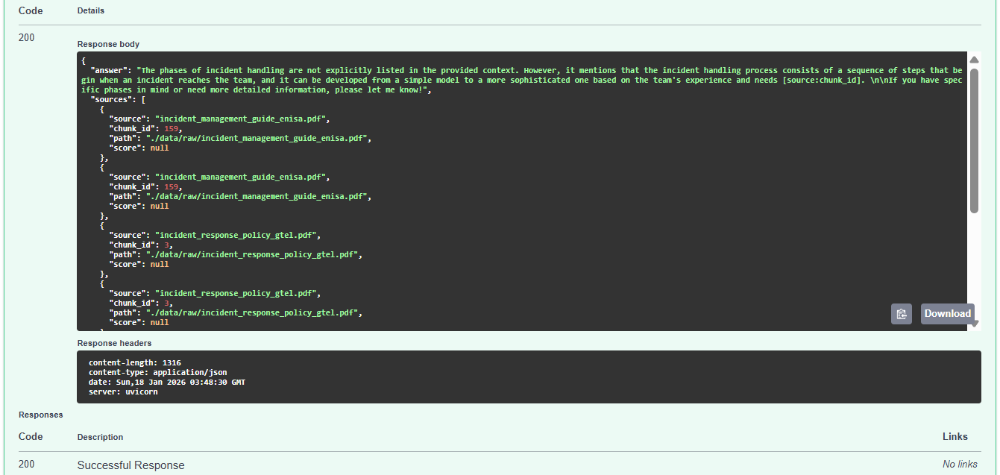
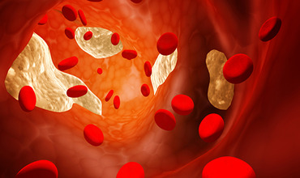

-
May 2025 - Aug 2025
Data Science Intern
TGS
Houston, TX, United States
Developed and optimized a large-scale machine learning foundation model for geological data.
Improved the model's architecture and fine-tuned it on industry datasets, enabling more accurate predictions for subsurface formation analysis.
-
Indiana University Bloomington
Bloomington, IN, United States
Working in the Cognitive AI lab under Dr. Zoran Tiganj, focusing on in-context learning mechanisms in Transformers. Investigating temporal dynamics of attention heads in Large Language Models, drawing parallels to human memory.
Sep 2024 - present
Research Assistant
-
July 2023 - June 2024
Software Engineer
Radisys India Ltd.
Bangalore, Karnataka, India
Worked with the OAM (Operations, Administration, and Maintenance) team to improve the 5G Network infrastructure.
Handled requests across various modules like
CM (Configuration Management): Added new configurations in YANG model according to 3GPP specifications and
PM (Performance Management): Handled performance counters by modifying the codebase in C++ and Python.
-
Technocolabs Softwares Inc.
Indore, Madhya Pradesh, India (remote)
Used Machine Learning Algorithms to develop models on existing data to help predict used car prices and determine whether a used car is worth the posted price.
Preprocessed the large dataset in Python and performed EDA. Used BigQuery for creating data warehouse and Google Cloud Composer for managing ETL workflow.
July 2022 - Sep 2022
Data Engineer Intern
-
June 2022 - July 2022
Research Intern
IISER Bhopal
Bhopal, Madhya Pradesh, India
Worked under the mentorship of Dr. Sunando Datta.
Studied target genes of YAP transcription factor in
Hippo Signaling Pathway in order to inhibit tumor growth.
Implemented web scraping in Python and did
data visualization of the target genes.
Also wrote a python script for cell migration analysis and deployed the web application using Flask.
-
IIT Mandi
Mandi, Himachal Pradesh, India
Worked under the mentorship of Dr. Tulika P Srivastava on this Computational Biology Project.
Designed indices to increase throughput of
Illumina sequencing.
Wrote a Perl script for the sequence of barcodes and did quality analysis for error reduction.July 2021 - Nov 2021
Research Project
Projects
Multi-Agent Race Telemetry Analysis
Google ADK, Vertex AI, FastAPI
Enterprise RAG Copilot
RAG, LLMs, LangChain, FastAPI
SkinGuardian - Skin Cancer Classifier
Deep Learning, CNN
Events Booking Web Application
NoSQL, MongoDB, PowerBI, React, Node.js
On-Time Performance Dashboard
PowerBI, SQL
Finding Flagella - YOLO Benchmarking in Tomographic Data
Computer Vision, Object Detection, YOLO
AnimeHub - Anime Recommender
Python, Flask
PodQuik - Audio Summarizer
GenAI, NLP, Streamlit
Sentiment Analysis of Tweets
Machine Learning, NLP
Biostatistical Analysis of Cholesterol Level
R, ANOVA




Achievements
contact me
Anooshka Bajaj
Address:
Bloomington, IN, United States
Email:
anooshkabajaj@gmail.com
LinkedIn:
anooshkabajaj